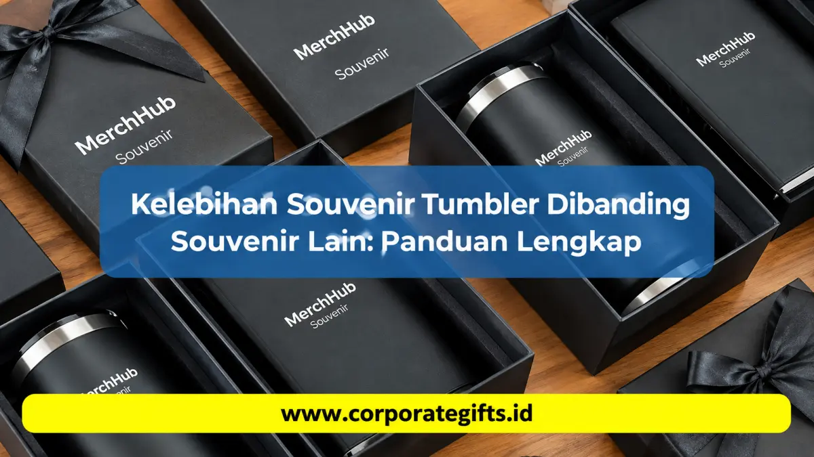

Corporate Gifts ID - Kelebihan souvenir tumbler dibanding jenis souvenir lain seperti mug keramik, gantungan kunci, atau miniatur pajangan terletak pada kemampuan fungsionalnya yang tinggi untuk pemakaian sehari-hari, daya tahan material yang unggul, efektivitas eksposur merek yang berkelanjutan, serta dukungannya terhadap gaya hidup ramah lingkungan bebas sampah plastik. Kombinasi kepraktisan dan estetika modern inilah yang menjadikan tumbler sebagai primadona dalam pengadaan cinderamata korporat di Indonesia.
Poin Kunci Kelebihan Souvenir Tumbler:
- Fungsionalitas Harian: Digunakan secara aktif untuk membawa kopi panas, teh, maupun air dingin di kantor, kendaraan, dan gym.
- Daya Tahan Tinggi: Terbuat dari material stainless steel SUS 304 food-grade yang tidak mudah pecah, retak, atau berkarat.
- ROI Branding Maksimal: Menghasilkan ratusan tayangan merek (brand impressions) per bulan saat diletakkan di meja kerja atau ruang rapat klien.
- Mendukung Nilai ESG: Reusable dan ramah lingkungan, membantu perusahaan mengampanyekan gaya hidup zero plastic waste.
- Prestige & Fleksibilitas Desain: Mudah dipadukan dengan teknik grafir laser presisi, sablon UV, dan kemasan hardbox mewah.
Mengapa Souvenir Tumbler Menjadi Pilihan Terpopuler?
Dalam setiap penyelenggaraan agenda formal mulai dari seminar nasional, gathering tahunan, perayaan HUT perusahaan, hingga onboarding karyawan baru panitia pengadaan selalu dihadapkan pada dilema menentukan jenis cinderamata. Souvenir konvensional seperti gantungan kunci, kipas plastik, atau pajangan meja sering kali berakhir tersimpan di laci atau bahkan langsung dibuang karena tidak memiliki kegunaan nyata.
Fenomena inilah yang melatarbelakangi mengapa souvenir tumbler kini mendominasi pilihan instansi pemerintah dan korporasi swasta. Tumbler menjembatani kebutuhan penerima akan wadah minum higienis dengan kepentingan penyelenggara untuk menampilkan identitas korporat secara elegan dan bermartabat.
5 Keunggulan Utama Souvenir Tumbler Dibanding Souvenir Lain
Untuk memahami mengapa souvenir tumbler memiliki keunggulan kompetitif yang tak tertandingi di dunia merchandise promosi, berikut telaah mendalam lima faktor pembedanya:
1. Praktis Digunakan Sehari-hari untuk Mobilitas Tinggi
Tidak seperti mug keramik yang berat dan rawan pecah bila dibawa bepergian, tumbler dirancang khusus dengan sistem tutup kedap cairan (leak-proof) dan bentuk ergonomis. Peserta dapat membawanya ke dalam mobil, meletakkannya di cup holder, memasukkannya ke dalam ransel kerja, atau menggunakannya saat menghadiri sesi workshop. Kemudahan mobilitas ini memastikan tumbler digunakan terus-menerus setiap hari.
2. Material Berkualitas Tinggi, Kokoh, dan Tahan Lama
Sebagian besar souvenir tumbler korporat premium dibuat dari bahan stainless steel SUS 304 food-grade dengan teknologi insulasi vakum ganda (double-wall vacuum insulation). Bahan ini mampu menjaga suhu kopi panas hingga 8 jam dan minuman dingin segar hingga 16 jam. Tumbler tidak akan berkarat, tidak meninggalkan bau sisa minuman, dan tahan terhadap benturan fisik, memberikan masa pakai hingga bertahun-tahun.
3. Media Branding Efektif dengan Paparan Merek Berulang
Menurut riset Advertising Specialty Institute (ASI), souvenir fungsional yang digunakan secara aktif menghasilkan rata-rata 344 impresi visual merek per bulan. Ketika karyawan atau klien meletakkan tumbler berlogo perusahaan Anda di atas meja rapat, logo tersebut dilihat oleh rekan kerja, mitra bisnis, hingga tamu kantor. Ini adalah media iklan berjalan berbiaya rendah dengan efektivitas jangka panjang.
4. Mendukung Program Ramah Lingkungan & Target ESG Korporat
Kini, isu keberlanjutan dan tata kelola lingkungan (ESG - Environmental, Social, and Governance) menjadi tolok ukur reputasi perusahaan modern. Dengan membagikan tumbler reusable, instansi Anda secara nyata berkontribusi menekan limbah botol plastik sekali pakai di tempat kerja dan ruang publik. Hal ini memperkuat citra perusahaan Anda sebagai entitas bisnis yang bertanggung jawab secara ekologis.
5. Memberikan Kesan Eksklusif, Mewah, dan Bernilai Tinggi
Secara psikologis, penerima cinderamata memandang tumbler sebagai hadiah dengan perceived value yang tinggi. Tumbler dengan finishing matte powder-coating, grafir nama laser personal, atau display suhu digital di tutupnya memancarkan aura prestisius yang setara dengan barang ritel bermerek, mencerminkan penghargaan mendalam dari pengirimnya.

Koleksi tumbler stainless custom dengan ukiran laser presisi memberikan sentuhan eksklusif untuk gift set VIP korporat.
Tabel Komparasi: Tumbler vs Souvenir Konvensional Lainnya
Untuk mempermudah tim panitia pengadaan dan bagian HRD/Marketing dalam mengambil keputusan anggaran, berikut tabel perbandingan komprehensif antara souvenir tumbler dengan ragam souvenir populer lainnya:
| Jenis Cinderamata | Mobilitas & Portabilitas | Nilai Guna Harian | Retensi / Daya Simpan | Eksposur Branding | Persepsi Nilai (Prestige) |
|---|---|---|---|---|---|
| Souvenir Tumbler Stainless | Sangat tinggi (bisa dibawa ke mana saja) | Sangat tinggi (minum panas/dingin harian) | Lama (bertahan 2-5 tahun) | Sangat luas (kantor, gym, mobil) | Tinggi & eksklusif |
| Mug Keramik Standar | Rendah (hanya diam di meja kantor/dapur) | Cukup (terbatas untuk kopi/teh) | Sedang (rawan retak atau pecah) | Terbatas di ruangan tertutup | Standar |
| Gantungan Kunci / Pin | Tinggi namun sering tertutup saku | Sangat rendah | Pendek (cepat rusak / tercecer) | Sangat minim (area cetak kecil) | Rendah / souvenir massal |
| Miniatur Pajangan / Plakat Akrilik | Nol (statis di etalase) | Nol (hanya dekoratif) | Panjang namun pasif | Pasif (hanya terlihat jika dikunjungi) | Formal kaku |
Tips Memilih Souvenir Tumbler yang Tepat untuk Perusahaan
Agar pengadaan tumbler custom menghasilkan impresi yang maksimal dan terhindar dari pemborosan anggaran, perhatikan parameter teknis berikut:
- Prioritaskan Material Food-Grade: Pastikan memilih tumbler berbahan stainless steel SUS 304 yang telah tersertifikasi bebas BPA (BPA-free) agar aman bagi kesehatan pengguna.
- Tentukan Kapasitas yang Ergonomis: Kapasitas antara 450 ml hingga 500 ml adalah ukuran paling seimbang cukup untuk memenuhi kebutuhan hidrasi tanpa membuat tas terasa berat.
- Pilih Teknik Personalisasi Logo yang Tepat: Untuk hasil yang abadi dan tidak akan terkelupas saat dicuci, pilihlah teknik grafir laser presisi. Jika logo perusahaan Anda memiliki gradasi warna spesifik, gunakan teknik UV print flatbed berdaya rekat tinggi.
- Sempurnakan dengan Kemasan Berkelas: Jangan biarkan tumbler dibagikan hanya dengan kantong plastik. Sertakan hardbox bermotif elegan, pita satin, atau sleeve box bermerek agar memberikan efek unboxing experience yang memukau bagi penerima.
Fleksibilitas Souvenir Tumbler untuk Berbagai Agenda Acara
Salah satu keistimewaan terbesar tumbler adalah fleksibilitasnya dalam beradaptasi dengan beragam tema kegiatan instansi:
Onboarding Karyawan Baru
Disertakan dalam paket starter kit karyawan baru bersama notebook kulit dan pulpen metal untuk membangkitkan rasa bangga terhadap perusahaan.
Hadiah VIP Tamu & Klien Bisnis
Smart LED tumbler dengan personalisasi grafir nama masing-masing direksi menjadi cinderamata prestisius pada pertemuan bisnis strategis.
Seminar Nasional & Konferensi
Menjadi item primadona di dalam goodie bag seminar kit yang langsung digunakan peserta saat acara berlangsung.
Perayaan Hari Ulang Tahun Kantor
Cinderamata seragam bagi seluruh jajaran staf untuk memperkuat rasa kebersamaan dan kekompakan tim kerja.
Pertanyaan Seputar Souvenir Tumbler (FAQ)
Kesimpulan & Rekomendasi Solusi
Memilih tumbler sebagai cinderamata adalah keputusan investasi promosi yang sangat cerdas. Di balik bentuknya yang fungsional, tumbler menyimpan potensi branding luar biasa yang mampu menjaga kehadiran merek perusahaan Anda di benak audiens setiap hari, jauh melampaui efektivitas souvenir sekali pakai lainnya.
Untuk memastikan hasil produksi tumbler custom yang rapi, presisi, dan tepat waktu, percayakan pengadaan merchandise Anda kepada vendor berpengalaman dengan jaminan kualitas terpercaya seperti CorporateGifts.ID.

Ditulis oleh: Arinda Zakia
Senior Corporate Gifting SpecialistSpesialis strategi souvenir promosi korporat, kurasi paket seminar kit terpadu, dan hampers eksekutif B2B dengan pengalaman lebih dari 7 tahun mendampingi ratusan instansi pemerintah dan perusahaan multinasional di Indonesia.
Lihat Profil Lengkap & Panduan Lainnya